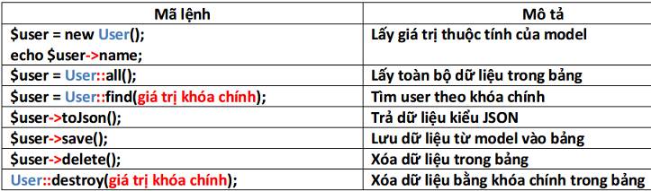

Báo cáo nội dung tìm hiểu
Thông tin nhóm
Giới thiệu Laravel
Cấu trúc thư mục Laravel
Một số thành phần quan trọng:
- App : chứa các Controller, Middleware, Model ,... Ta sẽ phải dùng nhiều tới thư mục này.
- Bootstrap : chứa file bootstrap, autoload.php và thư mục cache.
- Config : chứa các file cấu hình của hệ thống.
- Database : bao gồm migrations và seeds.
- Public: có file index.php - file nhận tất cả các request của client. Ngoài ra còn có thư mục assets để chứa các file image, js hay css.
- Resources : nơi lưu trữ thư mục views chứa các file .blade.php chính là phần view. Còn có thư mục lang chứa các file dùng làm ứng dụng đa ngôn ngữ.
- Routes : chứa tất cả các route được định nghĩa trong các file web.php, api.php, console.php.
- Storage: Lưu trữ cache, session, logs và các compiled template
- Tests : UnitPHP.
- Vendor : Core của Laravel framework và các thư viện của bên thứ 3.
- File .env: Cài đặt liên kết tới database cho hệ thống.
Mô hình hoạt động của Laravel (MVC):

Mô hình MVC trong Laravel:
- Controller : có chức năng điều khiển, sắp xếp và xử lý các yêu cầu của người dùng.
- Model : sẽ đảm nhiệm các công việc trao đổi dữ liệu với database.
- View : là thành phần giao diện, hiển thị dữ liệu cho người dùng.
Route
Cũng giống như một số PHP Framework khác, route là định tuyến đến những controller cụ thể nào từ phía request của người sử dụng. Khác biệt ở Laravel là bạn có thể không cần thiết phải tạo ra controller mà thực thi những công việc mong muốn 1 cách trực tiếp tại route dễ dàng.Cấu trúc route
Tuy có thể thực thi công việc trực tiếp tại route nhưng để rõ ràng cấu trúc project, ta nên sử dụng route để gọi công việc của controller
Truyền tham số trên route
Controller
Sau khi route nhận được request thì sẽ chuyển hướng request đến cho controller và giao cho controller này xử lý.Cấu trúc Controller
Các Controller sẽ được lưu tại thư mục App/Http/Controllers trong Laravel.
Nhận dữ liệu từ Route

Gửi nhận dữ liệu với Request và Responses
Làm việc với URL
Kết quả: goi/Controller
Mở rộng:
Gửi nhận tham số trên Request
Views
Là các file có đuôi .php, chứa mã nguồn html, hiển thị dữ liệu cho người dùng xem và được lưu tại thư mục resources/views trong Laravel.Gọi view
Nhận dữ liệu từ Route
Kết quả : Here is my view
Truyền tham số sang view
Blade Template
Blade Template là một templating engine đầy mạnh mẽ!Không giống những PHP templating engine phổ biến khác, Blade không giới hạn chúng ta sử dụng code PHP trong views. Tất cả các file Blade sẽ được dịch thành file code PHP và cache cho đến khi file Blade bị thay đổi, điều đó cũng có nghĩa là Blade tự làm tất cả những việc cần thiết để có thể chạy views cho ứng dụng của bạn.
Muốn sử dụng Blade Template thì các tên file phải có chứa .blade đằng trước .php
Kế thừa trong Blade Tempate
Đây là phần quan trọng nhất và cũng là mục tiêu của việc tạo ra các templete trong một ngôn ngữ lập trìnhKhông thể nào tạo ra một file templete mà lại chỉ dùng cho một chức năng nhất định. ta phải làm cho chúng có thể sử dụng lại ở các màn hình khác có cùng chức năng.
Hiển thị dữ liệu
Các câu lệnh điều kiện
Ngoài ra ta cũng có thể sử dụng code PHP trong Blade Template để xử lý công việc cần thiết
Làm việc với Database
Cấu hình file .env để kết nối với database
Tạo bảng
Các file tạo bảng Schema sẽ được lưu tại thư mục database/migrations/Seed
Seed là bộ dữ dữ liệu mẫu, nó giúp chúng ta quản lý dữ liệu trong bảng một cách thuận tiện, dễ dàng khôi phục lại khi cần thiết.Các file seed được lưu tại thư mục database/seeds/
Query Builder
Có tác dụng thay thế cho các câu lệnh truy vấn thông thường bằng các phương thức trong lớp DB.Một số câu lệnh truy vấn thường gặp
Lệnh Insert
insert([ mảng các bản ghi ] ); Ví dụ:
Eloquent – Model
Model là một lớp dữ liệu, có cấu trúc giống với bảng trong cơ sở dữ liệu, dùng để xử lý dữ liệu ra vào trong bảng.Cấu trúc một Model
Một số phương thức

Liên kết dữ liệu
Model là đại diện cho các bảng trong cơ sở dữ liệu, chính vì thế mà nó cũng có các liên kết với nhau.Tạo liên kết trong model
Bảng liên kết
Sử dụng liên kết để truy xuất nhanh
Ví dụ ở đây là loại sản phẩm gồm nhiều hãng sản phẩm, ta chỉ cần sử dụng "->" để truy xuất thẳng từ loại sang hãng muốn biết
Auth - Authenticate
Các hàm trong Auth
Để sử dụng auth ta phải gọi nó raVí dụ sử dụng auth để login
Pagination
Khai báo
Sử dụng: